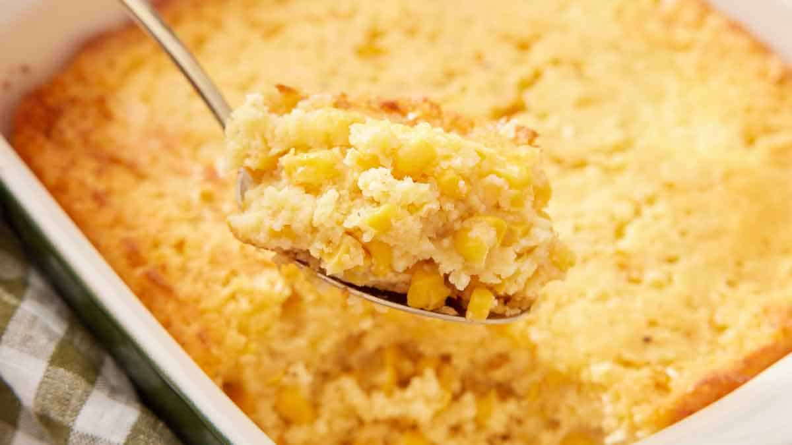

Corn Casserole

| Prep time: |
Cook time: |
Total time: |
| 10 mins |
45 mins |
55 mins |
Description
This corn casserole will be a welcome addition to any table. Whether
you're cooking for a special occasion or a regular weeknight, this
creamy corn casserole recipe will definitely become a staple in your
rotation.
Ingredients
- Canned Corn
- Cornbread mix
- Sour cream
- Butter
- Eggs
Process
-
Preheat the oven to 350 degrees F (175 degrees C). Lightly grease a
9x9-inch baking dish.
-
Mix whole and creamed corn, cornbread mix, sour cream, melted butter,
and eggs together in a medium bowl until well combined. Spoon mixture
into the prepared dish.
-
Bake in the preheated oven until the top is golden brown and a
toothpick inserted in the center comes out clean, about 45 minutes.